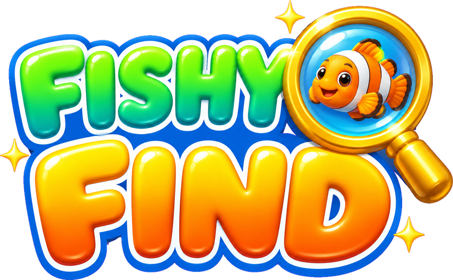

Drag to rotate · Pinch / scroll to zoom · Tap a fish
👆
Tap a fish
LEVEL1
★0 / 4
Tap to continue
BACKUP FULL
No more room to keep fish.
Look carefully before you tap!
BACKUP FULL
Keep playing? The fish in Backup
jump back into the tank.
NEW OBSTACLE
OBSTACLE
